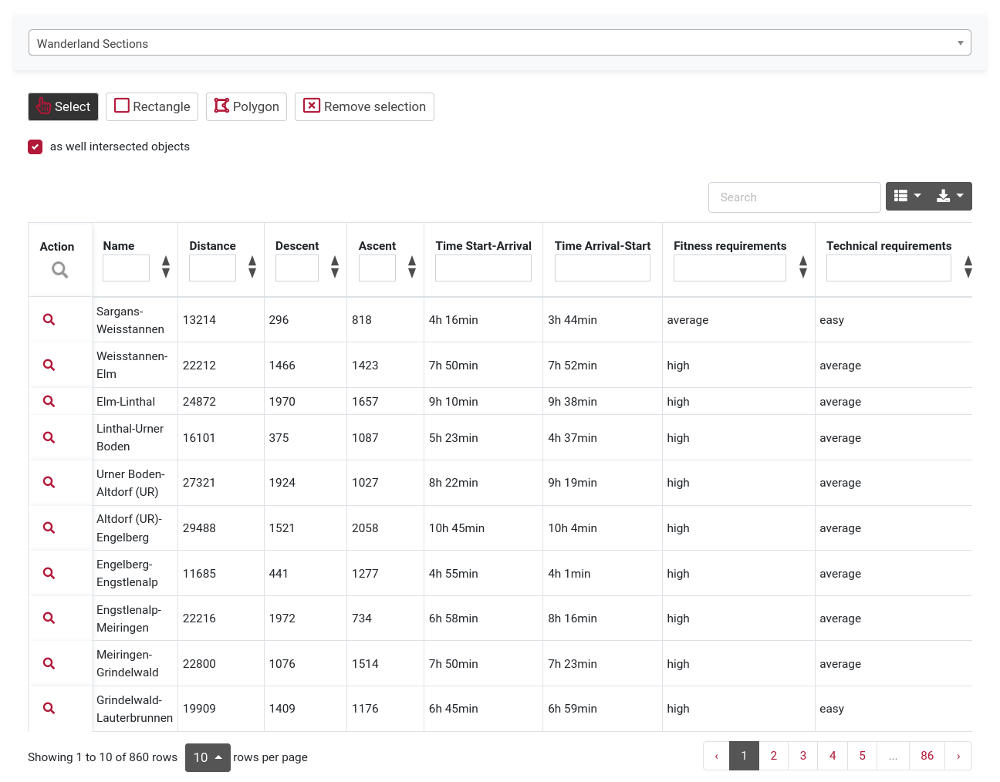
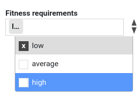

Text fields: arbitrary text input, it is filtered according to the entered text.
In the example: bern -> Via Albula/Bernina, Via Berna
Remove filter: Delete field or click on the "Remove selection" function

Functionality of lists:
Data can be filtered by any column or combination of columns. Different types of filters are available depending on the column contents:
Text fields: arbitrary text input, it is filtered according to the entered text.
In the example: bern -> Via Albula/Bernina, Via Berna
Remove filter: Delete field or click on the "Remove selection" function

Selection fields: Fields with fixed entries, single or multiple selection of the filter.
Example: Fitness requirement light, medium and/or strong, optionally combined with a text filter as above.
Remove filter: Delete field or click on the "Remove selection" function

Numeric fields: numeric operators: larger, smaller, equal etc. or ranges from-to.
Example, e.g. filter over the desired distance: <4000, 4000-6000, >10000 etc.
Example of a combination with selection fields: Distance <4000 and fitness requirement easy and technical requirement easy; or if one feels challenged: distance > 10000, fitness requirement difficult and technical requirement difficult
Remove filter: Delete field or click on the "Remove selection" function
The following selection options are available, which can be combined with the filters mentioned above. Optionally only whole objects or as well intersected objects. The selection is shown in the list.

Column Selection: select and deselect the columns to be displayed.

Export-function: JSON, XML, CSV, TXT, SQL, MS Excel